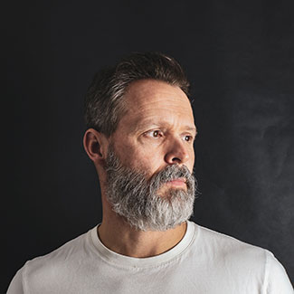

Madeleine Baker is a twenty two year old recent graduate from UCR Riverside, CA. She is in Graphic Design/Marketing and is looking to establish a working studio in a downtown location that is located in a financial district. Her hope is that she can network with other working Tech professionals and build a quality team within her first year.

Franklin Doyle owns a custom Motorcycle shop in Arizona and is looking to relocate to be closer to family in Idaho. Franklin is fifty one years old and has established his brand in his field, but is looking to establish new contacts for his shop opening near the center of Nampa. Franklin was very involved in local outreach programs in Arizona and looks to do the same in Idaho.